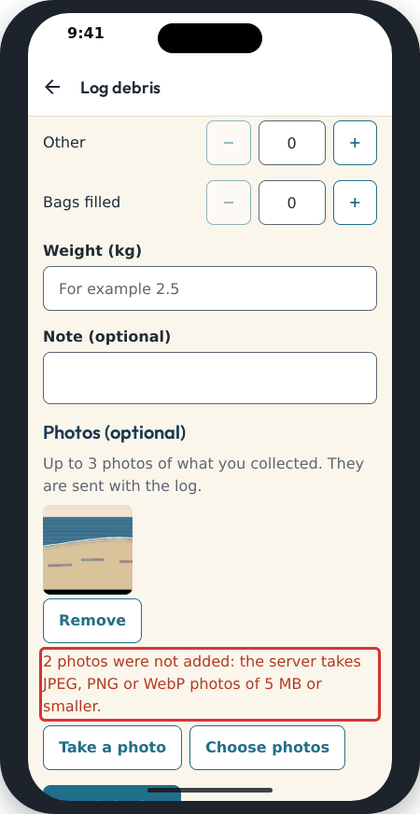

📸 Lesson 6.2: Camera and Photos
A tally sheet says "43 pieces, 1 bag". A photo shows the tangle of fishing line around the rocks, the bottle caps along the tide line, the bag that would not close. Organizers use those photos for reports, grant applications and the next season's plans, and volunteers like to see their work counted. Today Shoreline Crew learns to take them and choose them, keep them small, keep them safe on the phone, and send them with the debris log, even from a beach with no signal.
🎯 Learning Objectives
By the end of this lesson, you will be able to:
- Take a photo with the phone's camera (after Lesson 6.1's permission step) and choose photos from the library (no permission), and read what the picker gives back
- Keep photos small enough for one bar of signal: compression quality, no EXIF, JPEG instead of HEIC, and the API's limits checked before anything is sent
- Keep a photo safe while it waits: the cache versus the app's documents, with expo-file-system's
File,DirectoryandPaths, and a.web.tsstand-in for the web preview - Upload a photo from a phone to
POST /api/photosand say why the old React NativeFormDatatrick fails with SDK 58'sfetch - Send photos offline first: queued with their log, uploaded before it, each id saved so a retry never uploads a photo twice, with a version bump for the saved queue
📦 Code for this lesson
Starting code: lesson-21-start.zip · Finished code: lesson-21-end.zip. Each folder has a README with the commands to run it.
In This Lesson
👋 Welcome: Pictures of the Work
If you did last lesson's "Before the Next Lesson" task, you found that a single photo from a recent phone camera is often a few megabytes, and some are bigger. Now picture a volunteer at the north end of a beach, one bar of signal, three photos and a cold wind. Sending 12 MB from there is slow at best, and the API that receives them, shoreline-api, refuses anything over 5 MB anyway. So photos on a phone are never "just an upload": they are files that have to be made smaller, kept somewhere safe, and sent at the right time.
By the end of the lesson:
- The debris log has a Photos (optional) section: Take a photo opens the camera after the permission step you built in Lesson 6.1, Choose photos opens the photo library without any permission, and the chosen photos show as a strip of thumbnails you can remove.
- Photos are compressed when they are taken, checked against the API's rules before they are added, and moved into the app's own documents, where the phone will not delete them.
- Lesson 5.5's queue carries them: a log saved with no signal keeps its photos on the phone, and when the signal comes back, the photos go up first and the log follows with their ids.
Why it matters for your work: almost every app that people use outdoors or at work takes photos: delivery proof, insurance claims, site inspections, field surveys, receipts. The parts that go wrong are the same everywhere: huge files, lost files, formats a server does not take, duplicates after a retry. Teams that ship these apps value the developer who handles all four quietly.
🌱 Most of this runs where you cannot watch it
The camera, the photo library and the phone's file system live on the phone, and the web preview can only imitate them (a file chooser stands in for both). That is fine. You will check every step you can on your computer, read what the libraries do in their source, and then watch the rest happen on your own phone in Step 7. When the phone does something the lesson did not predict, you have learned something real about phones. Write it down.
📸 Two Ways to a Photo
On the web, an <input type="file" accept="image/*"> lets a person pick a file, and on a phone browser it may offer the camera too. A React Native app has no <input>. Instead, expo-image-picker opens the phone's own screens: the system camera, or the system photo library. Your app waits, and gets back the result.
import * as ImagePicker from 'expo-image-picker';
// The phone's camera screen (needs the camera permission first)
const taken = await ImagePicker.launchCameraAsync({ mediaTypes: ['images'] });
// The phone's photo library (no permission on current iPhones and Android phones)
const chosen = await ImagePicker.launchImageLibraryAsync({
mediaTypes: ['images'],
allowsMultipleSelection: true,
});
if (!chosen.canceled) {
for (const asset of chosen.assets) {
// asset.uri: where the photo is now; asset.mimeType: 'image/jpeg', ...
// asset.width, asset.height, asset.fileSize (bytes), asset.fileName
console.log(asset.uri, asset.mimeType, asset.fileSize);
}
}Both answer with the same shape: canceled (the volunteer closed the screen without a photo) and assets, one per photo. The uri is a file address on the phone (it starts with file:); the picker has already copied the photo into your app's space, so your app can read it without any further permission.
Take a photo (launchCameraAsync) | Choose photos (launchImageLibraryAsync) | |
|---|---|---|
| Permission | The camera permission: Lesson 6.1's step | None on current iPhones (the system picker runs outside your app) and on current Android phones (the system Photo Picker) |
| What the person sees | The phone's own camera screen, then "Use Photo" or "Retake" | The phone's own library, limited to what they select |
| Several at once | One per press | Yes, with allowsMultipleSelection and selectionLimit |
| Expo Go | Works (Expo Go carries the module) | Works |
| Web preview | A file chooser (with a capture hint that phone browsers may use for the camera) | A file chooser |
The permission row is why Lesson 6.1 said a no is an answer: a volunteer who refuses the camera can still choose a photo they took with the camera app. The web row was measured: expo-image-picker's web code creates a hidden <input type="file"> and clicks it, with capture="camera" for launchCameraAsync and multiple when several are allowed, and it always reports the camera permission as granted (there is no camera to ask about).
📱 On your phone
The camera and library screens, and "no permission for the library", come from Expo's and the platforms' documentation and could not be run here. On older Android versions without the system Photo Picker, Android may show a different picker; your code does not change.
What about expo-camera? It is the other camera package, and old tutorials (including this course's previous version) use it. It puts a live viewfinder inside your screen (CameraView), which you need for scanning QR codes or for your own camera controls. Shoreline Crew only needs "a photo of the pile", and the system camera already does that well, with the flash, zoom and focus people know. One package, expo-image-picker, covers both buttons.
🗜️ Photos for One Bar of Signal
shoreline-api takes JPEG, PNG or WebP photos of 5 MB or smaller. Three picker options do most of the work of getting there:
quality: 0.6re-encodes the photo as a JPEG at 60% quality. For a photo of a pile of debris on a small screen, the difference from the original is hard to see, and the file is usually several times smaller. (Withquality: 1, the default, the picker may hand you the original file untouched.)exif: falseleaves out the EXIF data: the camera model, the time, and often the exact place the photo was taken. Shoreline Crew does not need it, and a volunteer's home address has no business in a debris report.preferredAssetRepresentationMode: Compatiblematters on iPhones, which save photos as HEIC. Reading expo-image-picker's iOS code: from the library, a HEIC photo comes back as HEIC unless this option asks iOS for its "most compatible" version, a JPEG. shoreline-api answers HEIC with415 Photos must be JPEG, PNG or WebP images.(Android ignores the option.)
Even with these options, a phone can hand you something the server will refuse: a GIF, a screenshot saved as a huge PNG. The HQ's photo upload (in the web course) checked type and size before sending, and the phone does the same, at the moment a photo is added. That way the volunteer hears about it while they can still pick another photo, not hours later from the queue.
📱 On your phone
How small the files get depends on the phone and the photo. As a rough guide, 60% JPEG quality usually turns a few megabytes into a few hundred kilobytes; measure your own (Step 7 shows how). HEIC and the "compatible" JPEG are from Apple's and Expo's documentation and expo-image-picker's source; check on an iPhone.
📁 Where a Photo Lives
Where is the photo the picker gave you? In your app's cache folder. A phone's cache is the place it may empty when storage runs low; it is meant for things that can be fetched or made again. That is fine for a photo that is uploaded a second later. A debris log, though, can wait in the queue for hours (or until next weekend), and a log whose photos vanished in the meantime is a log that lies.
So Shoreline Crew moves each photo into its documents folder, which the phone leaves alone, and deletes it once the server has it. The tool is expo-file-system, whose API looks a lot like the web's File:
| expo-file-system | What it is |
|---|---|
Paths.document, Paths.cache | The app's two main folders, as Directory objects |
new Directory(Paths.document, 'log-photos') | A folder inside documents (just a name until you call create()) |
new File(uri), new File(folder, 'name.jpg') | A file, by address or by folder and name; exists, size, extension, uri |
await file.move(destination), file.delete() | Move (its uri changes to the new place) and delete |
One more property makes the next section easy: expo-file-system's File is a Blob (it implements the web's Blob interface), so fetch can send it as a request body.
The web preview has no file system for an app (expo-file-system's web side only prints "expo-file-system is not supported on web"), and the photo there is a blob: address in the browser's memory. You met the answer in Lesson 2.5: a second file with .web.ts, which the web bundle uses instead. Both files export the same three functions, so the rest of the app never knows which one it got.
💡 Mental model: bags first, then the tally sheet
At the end of a cleanup, the crew sets the filled bags on the sorting table, and the leader writes the tally sheet: "bags 1 to 3: plastic, glass, rope". The bags go to the table first; the sheet only names bags that are already there. Photos and logs work the same way. The photos are the bags: carried home in the dry bag (the app's documents, not a pocket that empties itself), handed over first, each given a number by the server. The log is the tally sheet: it lists those numbers (photoIds), and shoreline-api refuses a sheet that names a bag it has never seen.
⬆️ Sending a Photo
shoreline-api's POST /api/photos takes a photo in either of two forms: a multipart form with the image in a field named photo (what a browser's form sends), or the image itself as the request body, with its type in Content-Type. Either way it answers 201 with the saved photo, and its id is what a debris log's photoIds lists. Try the second form with curl and any small JPEG (dev-volunteer is the API's test token for Theo; in PowerShell, write curl.exe):
curl -i -X POST http://localhost:4000/api/photos -H "Authorization: Bearer dev-volunteer" -H "Content-Type: image/jpeg" --data-binary "@debris.jpg"Expected output
HTTP/1.1 201 Created
cache-control: no-store
content-type: application/json; charset=utf-8
location: /api/photos/pmwgb5thp1
vary: Origin
Date: Sat, 14 Nov 2026 11:14:10 GMT
Connection: keep-alive
Keep-Alive: timeout=5
Transfer-Encoding: chunked
{
"id": "pmwgb5thp1",
"url": "http://localhost:4000/api/photos/pmwgb5thp1",
"contentType": "image/jpeg",
"bytes": 16892,
"uploadedBy": "v04",
"createdAt": "2026-11-14T11:14:10.957Z"
}The url serves the photo back to anyone (GET /api/photos/:id needs no sign-in), built from the address you used, so a phone asking http://192.168.1.42:4000 gets photo links it can open. Your id and time will differ. Photos live in the API's memory, like everything else in it: restart the API and they are gone.
The HQ (in the web course) sent the multipart form: body.append('photo', file) with the browser's File. On a phone there is no browser File, and for years the React Native answer was a special object, { uri, name, type }, appended to a FormData. You will find it in most answers online. With Expo SDK 58 it no longer works (see Common Mistakes), because in SDK 58 the global fetch on a phone is Expo's own, from expo/fetch (Lesson 1.3), and that fetch sends Blobs, not file addresses.
Shoreline Crew's postPhoto therefore sends the photo itself as the body: on a phone the expo-file-system File (a Blob), in the web preview the browser's Blob. One function, the API's second form, nothing special:
// On a phone: the file in the app's documents. Sent as it is: a File is a Blob
const photo = new File(Paths.document, 'log-photos', 'example.jpg');
const saved = await postPhoto(photo, 'image/jpeg');
console.log(saved.id); // goes into the log's photoIds🧳 Photos in the Dry Bag
When should a photo be uploaded? The HQ uploaded each photo the moment it was chosen, which suits an office with Wi-Fi. On the beach, the moment the photo is taken is exactly when there may be no signal. There are two honest designs:
| Upload when chosen, attach to the log later | Queue the photos with their log (Shoreline Crew) | |
|---|---|---|
| Offline when chosen | Needs its own waiting list for photos, and a way to attach the ids once they exist | Nothing special: the log waits anyway, and its photos wait with it |
| Volunteer removes a photo or never sends the log | The server already has a photo nobody uses | Nothing was sent |
| Who sends | Two senders that must agree | One: Lesson 5.5's sendWaitingLogs, which already knows about sign-ins, answers and retries |
| Cost | Photos may be on the server before the volunteer presses Send | A log with photos takes a little longer to send |
Shoreline Crew queues them. Each queued log gets a list of photos, { uri, type, photoId }, with photoId: null until the upload works. The sender handles a log in this order:
Three details make it safe to repeat, like 5.5's queue:
- Each photo id is saved the moment it arrives. Photos have no
clientId: shoreline-api stores every upload as a new photo. If the photos went up but the log's answer was lost, the next try must send the log with the saved ids instead of uploading the photos again. - A photo answer is an answer like any other. A
413or415will not change on the next try, so the log is marked refused with the server's words, exactly like 5.5's403. (The check when a photo is added makes this rare.) - Per volunteer, as before. The sender still checks that the signed-in volunteer owns each log before it sends anything, photos included, so on a shared phone Maya's sign-in never uploads Theo's photos. The files themselves stay in the app's documents until Theo's own sign-in sends them, and only his Logbook shows them.
Queuing photos also changes what the queue saves on the phone. A volunteer who updates the app may have logs waiting from yesterday, saved without a photos list, and Lesson 5.5's merge check would throw those away. Zustand's persist has the tool for this: a version number saved with the data, and a migrate function that persist calls when the saved version is older. Version 1 gives every old log an empty photo list. (The queue's other version-0 checks from Lesson 5.5 keep passing, because they now go through migrate.)
⚠️ Common Mistakes
Each mistake below was measured on this course's machine: with curl against shoreline-api, in the web preview, or by running Expo's own code, as each one says.
⚠️ The classic React Native upload, from older answers
// Don't: React Native's old FormData trick (a file address instead of a Blob)
const body = new FormData();
body.append('photo', { uri: photo.uri, name: 'photo.jpg', type: 'image/jpeg' });
await fetch(`${apiBaseUrl()}/api/photos`, { method: 'POST', body });TypeScript stops it first. Written in postPhoto, npx tsc --noEmit printed:
Expected output
src/api/client.ts:452:8 - error TS2769: No overload matches this call.
Overload 1 of 3, '(name: string, value: string | Blob): void', gave the following error.
Object literal may only specify known properties, and 'uri' does not exist in type 'Blob'.
Overload 2 of 3, '(name: string, value: string): void', gave the following error.
Argument of type '{ uri: string; name: string; type: string; }' is not assignable to parameter of type 'string'.
Overload 3 of 3, '(name: string, blobValue: Blob, filename?: string | undefined): void', gave the following error.
Object literal may only specify known properties, and 'uri' does not exist in type 'Blob'.
452 body.append('photo', { uri: photo.uri, name: 'photo.jpg', type: 'image/jpeg' });
~~~~~~
...Read the overloads: append takes a string or a Blob, and the object is neither. The same old answers then suggest silencing TypeScript with a cast (as unknown as Blob). Do not: the error is right. SDK 58's fetch turns a FormData into bytes itself, part by part, and a part that is neither text nor a Blob stops it. Running that code from node_modules/expo (convertFormData) on a form built this way gave:
Expected output
old way: Error: Unsupported FormDataPart implementationThe error happens inside fetch, so Shoreline Crew's client would report it the way it reports every fetch that fails without an answer: as a NetworkError, "Could not reach the server at…". The queue would count a try and wait for a signal that is already there, forever. When an upload "cannot reach the server" while everything else can, suspect the body. Send a Blob (an expo-file-system File is one), as postPhoto does.
⚠️ Listing photos the server has never seen
It is tempting to skip the upload and put the photo's address on the log (photoIds: [photo.uri]), or to send the log before its photos. The API checks every id in photoIds. With curl, a log naming a file address:
Expected output
{
"error": "validation_failed",
"message": "Some fields need attention.",
"fieldErrors": {
"photoIds": [
"Upload each photo first and send the ids it returned."
]
}
}In the app, that 400 is a "no" that will never change, so the queue marks the log refused, with the API's general message (measured in the web preview, with a queued log whose photo id was a file address): "Not sent: Some fields need attention." The log is stuck until the volunteer removes it. Bags first, then the tally sheet: photos up, ids back, then the log.
⚠️ Sending what the phone gives you, as it is
Without quality and the "compatible" option, an iPhone can hand over a full-size HEIC photo. Sent with its real type and with a big PNG, curl measured shoreline-api's two answers:
Expected output
# Content-Type: image/heic
HTTP/1.1 415 Unsupported Media Type
...
{
"error": "unsupported_media_type",
"message": "Photos must be JPEG, PNG or WebP images."
}
# a 9 MB PNG
HTTP/1.1 413 Payload Too Large
...
{
"error": "payload_too_large",
"message": "Photos must be 5 MB or smaller."
}Both are final for that photo, and in the queue they would make the whole log refused. Make photos small when they are taken, and check type and size when a photo is added, while the volunteer can still choose another.
🛠️ Project: Photos on the Debris Log
You install the picker and the file system with Shoreline Crew's words for the camera, write the three photo-file functions (and their web stand-ins), build a thumbnail strip and the Photos (optional) section with both buttons, teach the client to upload a photo, and let the queue carry photos with their log. Then you try it in the web preview and on your phone. Work in shoreline-crew, with shoreline-api running in a second terminal.
Step 1: Install the picker and the file system, and write the camera's words (10 min)
Stop Metro with Ctrl+C (also Ctrl+C on a Mac), then:
npx expo install expo-image-picker expo-file-systemExpected output
env: load .env.local
env: export EXPO_PUBLIC_API_URL
› Installing 2 SDK 58.0.0 compatible native modules using npm
> npm install
added 2 packages, and audited 814 packages in 2s
167 packages are looking for funding
run `npm fund` for details
8 moderate severity vulnerabilities
To address issues that do not require attention, run:
npm audit fix
To address all issues (including breaking changes), run:
npm audit fix --force
Run `npm audit` for details.Two SDK 58 native modules (expo-file-system was already in node_modules, as part of expo; now your project names it), and, as with expo-location in Lesson 6.1, no "Added config plugin": expo-image-picker's plugin is one Expo applies by itself, with default words. Give it yours, at the end of plugins in app.json:
}
+ ],
+ [
+ "expo-image-picker",
+ {
+ "cameraPermission": "Shoreline Crew uses your camera to photograph the debris you collected at a cleanup.",
+ "photosPermission": false,
+ "microphonePermission": false
+ }
]cameraPermissionis the iPhone's purpose string for the camera question (in your own builds; Expo Go shows its own words, as Lesson 6.1 explained).photosPermission: false: the library picker needs no permission, so Shoreline Crew declares none.microphonePermission: false: the picker can record videos with sound; Shoreline Crew takes photos only. On Android,falsealso removes theRECORD_AUDIOpermission the plugin would add.
Check the result without building anything, as in Lesson 6.1's Exercise 3: run npx expo config --type introspect and search the output for UsageDescription and RECORD_AUDIO (and the line under it):
Expected output (the matching lines)
NSCameraUsageDescription: 'Shoreline Crew uses your camera to photograph the debris you collected at a cleanup.',
NSLocationWhenInUseUsageDescription: "Shoreline Crew uses your location to show how far you are from a cleanup's meeting point.",
NSFaceIDUsageDescription: 'Allow $(PRODUCT_NAME) to access your Face ID biometric data.',
...
'android:name': 'android.permission.RECORD_AUDIO',
'tools:node': 'remove'One camera sentence in Shoreline Crew's words, and the microphone permission marked for removal. Without the entry (measured in a copy of the project), the plugin adds photo-library, camera and microphone strings in its default words, plus RECORD_AUDIO. The camera permission itself on Android comes from the library's own manifest, which is merged in when a build is made.
Step 2: Keep the photos safe, on the phone and in the web preview (15 min)
Create src/utils/photoFiles.ts, the phone's version:
// The photos a volunteer adds to a debris log, as files on this phone (new). The picker leaves each
// photo in the app's cache, which the phone may empty when storage runs low. A log can wait days
// for a signal, so its photos move into the app's documents until the log is sent.
import { randomUUID } from 'expo-crypto';
import { Directory, File, Paths } from 'expo-file-system';
const folder = new Directory(Paths.document, 'log-photos');
/** Move a picked photo out of the cache into the app's documents: where it is now, and its size */
export async function keepPhoto(uri: string): Promise<{ uri: string; bytes: number }> {
folder.create({ idempotent: true }); // no error when the folder is already there
const photo = new File(uri);
await photo.move(new File(folder, `${randomUUID()}${photo.extension}`)); // photo.uri changes
return { uri: photo.uri, bytes: photo.size };
}
/** The photo, ready to send (expo-file-system's File is a Blob), or null when the file is gone */
export async function readPhoto(uri: string): Promise<Blob | null> {
const photo = new File(uri);
return photo.exists ? photo : null;
}
/** Delete a kept photo: its log was sent, or the volunteer took it out */
export function forgetPhoto(uri: string): void {
const photo = new File(uri);
if (photo.exists) {
photo.delete();
}
}keepPhotomoves the picker's file (in the cache) intolog-photosin the app's documents, under a new random name (expo-crypto'srandomUUID, from Lesson 5.4), keeping its extension.create({ idempotent: true })makes the folder the first time and does nothing after that. It returns the new address and the file's real size, which is what the server will receive.readPhotogives the sender the file, ornullif it is gone. TheFileitself is returned: it is aBlob.forgetPhotodeletes a photo once the server has it, or when the volunteer takes it out of the log.
Then the web preview's version, next to it, with the same three functions:
// The web preview's version of photoFiles.ts: a browser has no file system for the app. A picked
// photo stays at the blob: address the browser gave it, which lasts until the page reloads.
/** Nothing to move on the web: read the photo once for its size */
export async function keepPhoto(uri: string): Promise<{ uri: string; bytes: number }> {
const photo = await (await fetch(uri)).blob();
return { uri, bytes: photo.size };
}
/** The photo, ready to send, or null when the address no longer works (after a reload) */
export async function readPhoto(uri: string): Promise<Blob | null> {
try {
return await (await fetch(uri)).blob();
} catch {
return null;
}
}
/** Let the browser free a blob: photo */
export function forgetPhoto(uri: string): void {
if (uri.startsWith('blob:')) {
URL.revokeObjectURL(uri);
}
}In a browser, fetch can read a blob: address, so keepPhoto only measures the photo, and readPhoto catches the one failure the web preview has: after a reload the blob: address is dead (measured: a waiting log was then sent without its photo, as uploadPhotos in Step 3 decides). TypeScript type-checks the phone's file (imports of @/utils/photoFiles resolve to it), which is why the two must keep the same exports.
Step 3: Upload a photo, and let the queue carry photos (25 min)
In src/api/client.ts, import the API's Photo type, copy the HQ's isPhoto check, and add postPhoto at the end:
PageInfo,
+ Photo,
Role,
// ...
isStringArray(value.photoIds)
+ );
+}
+
+/** A photo the API has saved, as POST /api/photos answers (copied) */
+function isPhoto(value: unknown): value is Photo {
+ return (
+ isRecord(value) &&
+ typeof value.id === 'string' &&
+ typeof value.url === 'string' &&
+ typeof value.contentType === 'string' &&
+ typeof value.bytes === 'number'
);
// ...
}
+
+/**
+ * POST /api/photos: upload one photo, and get back its id for a debris log's photoIds.
+ * The photo itself is the body, and Content-Type says what kind of image it is (rewritten: the HQ
+ * sent a FormData with the browser's File). Too big is an ApiError 413, another kind of file 415.
+ */
+export async function postPhoto(photo: Blob, contentType: string): Promise<Photo> {
+ const response = await request('/photos', {
+ method: 'POST',
+ headers: { 'Content-Type': contentType },
+ body: photo,
+ });
+ const data: unknown = await response.json();
+ if (!isPhoto(data)) {
+ throw new Error('Unexpected data from POST /api/photos');
+ }
+ return data;
+}postPhoto goes through the same request as everything else, so it gets the sign-in token, NetworkError when there is no answer, and ApiError with the API's words for 413 and 415. The body is the Blob; the Content-Type header is the type the picker reported.
Next, in src/state/logQueue.ts, give each queued log its photos, a way to save an uploaded photo's id, a check for saved photos, and version 1 with its migrate:
+/** A photo for a log: the file on this phone, its kind, and its id on the server once uploaded */
+export type LogPhoto = {
+ uri: string;
+ type: string; // 'image/jpeg', 'image/png' or 'image/webp': what the API takes
+ photoId: string | null; // null until the upload worked
+};
+
/** One log in the queue: what to send, whose it is, and how sending it has gone so far */
export type QueuedLog = LogToSend & {
+ photos: LogPhoto[]; // sent before the log, which then lists their ids
volunteerId: string; // the volunteer who wrote it: only their sign-in may send it
// ...
sending: boolean;
- add: (volunteerId: string, item: LogToSend) => void;
+ add: (volunteerId: string, item: LogToSend, photos: LogPhoto[]) => void;
change: (clientId: string, changes: Partial<QueuedLog>) => void;
+ setPhotoId: (clientId: string, uri: string, photoId: string) => void;
remove: (clientId: string) => void;
// ...
};
+
+function isLogPhoto(value: unknown): value is LogPhoto {
+ return (
+ typeof value === 'object' &&
+ value !== null &&
+ 'uri' in value &&
+ typeof value.uri === 'string' &&
+ 'type' in value &&
+ typeof value.type === 'string' &&
+ 'photoId' in value &&
+ (value.photoId === null || typeof value.photoId === 'string')
+ );
+}
// ...
typeof value.attempts === 'number' &&
+ 'photos' in value &&
+ Array.isArray(value.photos) &&
+ value.photos.every(isLogPhoto) &&
'event' in value &&
// ...
sending: false,
- add: (volunteerId, item) =>
+ add: (volunteerId, item, photos) =>
set(({ logs }) => {
// ...
...item,
+ photos,
volunteerId,
// ...
})),
+ setPhotoId: (clientId, uri, photoId) =>
+ set(({ logs }) => ({
+ logs: logs.map((item) =>
+ item.log.clientId === clientId
+ ? {
+ ...item,
+ photos: item.photos.map((photo) =>
+ photo.uri === uri ? { ...photo, photoId } : photo,
+ ),
+ }
+ : item,
+ ),
+ })),
remove: (clientId) =>
// ...
partialize: ({ logs }) => ({ logs }),
+ // Version 1 (Lesson 6.2) added photos. persist calls migrate when the saved version is older:
+ // a log saved by version 0 gets an empty photo list, so it passes the check and is kept
+ version: 1,
+ migrate: (saved, version) => {
+ const logs = typeof saved === 'object' && saved !== null && 'logs' in saved ? saved.logs : [];
+ return {
+ logs: (Array.isArray(logs) ? logs : [])
+ .map((item) => (version === 0 ? { ...item, photos: [] } : item))
+ .filter(isQueuedLog),
+ };
+ },
// Keep only the saved logs that pass the checkLogPhotois what the queue saves for a photo: the file's address, never the image data. AsyncStorage holds text; a few photos as base64 text would be megabytes of it, read at every start.setPhotoIdchanges one photo of one log, so each id is saved (and persisted) the moment the server answers.migrateruns beforemerge, only for data saved with an older version. It gives old logs an emptyphotoslist, then keeps the ones that pass the check.
In src/state/sendLogs.ts, upload the photos before the log, and delete the files after it:
-import { ApiError, postLog, readSession } from '@/api/client';
+import { ApiError, postLog, postPhoto, readSession } from '@/api/client';
import { queryClient } from '@/api/queries';
import { markSignInEnded } from '@/auth/ended';
-import { useLogQueue } from '@/state/logQueue';
+import { type QueuedLog, useLogQueue } from '@/state/logQueue';
import { saveSentLogs } from '@/storage/logbook';
+import { forgetPhoto, readPhoto } from '@/utils/photoFiles';
+
+/**
+ * Upload a log's photos that the server does not have yet, and return the ids of all of them.
+ * Each new id is saved in the queue at once: when the log itself fails, the next try sends the
+ * log with that id instead of uploading the photo a second time.
+ */
+async function uploadPhotos({ log, photos }: QueuedLog): Promise<string[]> {
+ const photoIds: string[] = [];
+ for (const photo of photos) {
+ let photoId = photo.photoId;
+ if (photoId === null) {
+ const file = await readPhoto(photo.uri);
+ if (file === null) {
+ continue; // the file is gone (the web preview after a reload): the log goes without it
+ }
+ photoId = (await postPhoto(file, photo.type)).id;
+ useLogQueue.getState().setPhotoId(log.clientId, photo.uri, photoId);
+ }
+ photoIds.push(photoId);
+ }
+ return photoIds;
+}
// ...
// but its answer was lost. Either way the server has it once.
- const saved = await postLog(item.event.id, item.log);
+ // Photos first: the log lists their ids (the API checks that each one exists)
+ const photoIds = await uploadPhotos(item);
+ const saved = await postLog(item.event.id, { ...item.log, photoIds });
await saveSentLogs([{ log: saved, event: item.event }]);
useLogQueue.getState().remove(clientId);
+ item.photos.forEach((photo) => forgetPhoto(photo.uri)); // the server has them now
} catch (error) {
// ...
if (error instanceof ApiError && error.status < 500) {
- // A "no" (403 no spot, 409 not yet, 400 a field): sending again gets the same answer
+ // A "no" (403 no spot, 409 not yet, 400 a field, 413/415 a photo): the same answer again
useLogQueue.getState().change(clientId, { status: 'refused', problem: error.message });Everything else in the sender stays as Lesson 5.5 wrote it, and that is the point: uploadPhotos runs inside the same try, so a photo's 413 lands in the same "refused" branch as a 403, no answer lands in "count a try and stop", and a 401 still ends the sign-in. A photo whose file is gone is skipped, so the counts still reach the server.
Run npx tsc --noEmit now. The queue's add takes three arguments, and TypeScript finds the one place that still passes two:
Expected output
src/app/log/[id].tsx:133:5 - error TS2554: Expected 3 arguments, but got 2.
133 addLog(viewer, { event, log });
~~~~~~
src/state/logQueue.ts:33:47
33 add: (volunteerId: string, item: LogToSend, photos: LogPhoto[]) => void;
~~~~~~~~~~~~~~~~~~
An argument for 'photos' was not provided.
Found 1 error in src/app/log/[id].tsx:133Leave it for Step 6: the form will pass its photos there. A changed function signature turning into a list of every call site to fix is one of the best things TypeScript does for you.
Step 4: A strip of thumbnails, in the Logbook first (10 min)
Create src/components/PhotoStrip.tsx. It shows any list of photos, and adds a Remove under each one only when it is given onRemove:
import { Image } from 'expo-image';
import { StyleSheet, View } from 'react-native';
import { Button } from '@/components/Button';
import { createThemedStyles } from '@/hooks/useTheme';
import { radius, spacing } from '@/theme/spacing';
type PhotoStripProps = {
photos: { uri: string }[];
onRemove?: (uri: string) => void; // with it, each photo gets a Remove button
};
// A row of small photos (they wrap to the next line on a narrow phone)
export function PhotoStrip({ photos, onRemove }: PhotoStripProps) {
const themed = useStyles();
if (photos.length === 0) {
return null;
}
return (
<View style={styles.strip}>
{photos.map((photo, index) => (
<View key={photo.uri} style={styles.item}>
<Image
source={{ uri: photo.uri }} // a file on this phone (or a blob: in the web preview)
style={[styles.photo, themed.photo]}
contentFit="cover" // fill the square, cropping the edges
accessibilityLabel={`Debris photo ${index + 1} of ${photos.length}`}
/>
{onRemove && (
<Button
label="Remove"
accessibilityLabel={`Remove photo ${index + 1}`}
onPress={() => onRemove(photo.uri)}
/>
)}
</View>
))}
</View>
);
}
const styles = StyleSheet.create({
strip: {
flexDirection: 'row',
flexWrap: 'wrap',
gap: spacing.sm,
},
item: {
gap: spacing.xs,
},
photo: {
width: 96,
height: 96,
borderRadius: radius.picture,
},
});
const useStyles = createThemedStyles(({ colors }) =>
StyleSheet.create({
photo: {
backgroundColor: colors.picture, // shows while the photo loads
},
}),
);- expo-image (Lesson 2.3) shows a local file as easily as a URL: the
sourceis the photo'suri. A fixed 96 by 96 square withcontentFit="cover"keeps every photo the same size whatever its shape, and thepicturecolor fills the square while it loads. - Each photo gets an
accessibilityLabel("Debris photo 1 of 2"; in the web preview it becomes the image's alt text, measured), and each Remove says which photo it removes. Lesson 8.1 checks the whole app with a real screen reader. flexWrap: 'wrap': three squares fit on a phone, and on a narrow one the third moves to the next line instead of off the screen.
The Logbook's waiting cards show their photos, and Remove on a refused log deletes them too, in src/app/(tabs)/logbook.tsx:
import { LoadingView } from '@/components/LoadingView';
+import { PhotoStrip } from '@/components/PhotoStrip';
import { Screen } from '@/components/Screen';
// ...
import { formatDate } from '@/utils/format';
+import { forgetPhoto } from '@/utils/photoFiles';
// ...
<AppText>{amounts({ pieces, bags: log.bags, weightKg: log.weightKg })}</AppText>
+ <PhotoStrip photos={item.photos} />
{item.status === 'waiting' ? (
// ...
accessibilityLabel={`Remove the log for ${event.title}`}
- onPress={() => removeLog(log.clientId)}
+ onPress={() => {
+ removeLog(log.clientId);
+ item.photos.forEach((photo) => forgetPhoto(photo.uri)); // its photos go too
+ }}
/>Step 5: Take a photo, choose photos (20 min)
Create src/components/LogPhotos.tsx, the whole Photos (optional) section:
import * as ImagePicker from 'expo-image-picker';
import { useState } from 'react';
import { StyleSheet, View } from 'react-native';
import { AppText } from '@/components/AppText';
import { Button } from '@/components/Button';
import { PermissionGate } from '@/components/PermissionGate';
import { PhotoStrip } from '@/components/PhotoStrip';
import { usePermission } from '@/hooks/usePermission';
import type { LogPhoto } from '@/state/logQueue';
import { spacing } from '@/theme/spacing';
import { forgetPhoto, keepPhoto } from '@/utils/photoFiles';
const maxPhotos = 3;
// What shoreline-api takes (POST /api/photos answers 415 and 413 otherwise)
const photoTypes = ['image/jpeg', 'image/png', 'image/webp'];
const maxBytes = 5 * 1024 * 1024;
// Small files for one bar of signal: JPEG at 60% quality, no EXIF data (it can hold where and
// when the photo was taken), and on an iPhone a JPEG copy of a HEIC photo
const pickerOptions: ImagePicker.ImagePickerOptions = {
mediaTypes: ['images'],
quality: 0.6,
exif: false,
preferredAssetRepresentationMode:
ImagePicker.UIImagePickerPreferredAssetRepresentationMode.Compatible,
};
// Said before the phone's camera question (Lesson 6.1's gate)
const cameraReason =
'Shoreline Crew opens the camera only when you press Take a photo, to photograph what you ' +
'collected. Your photos go to the server with your log, nowhere else.';
type LogPhotosProps = {
photos: LogPhoto[];
onChange: (photos: LogPhoto[]) => void;
};
// "Photos (optional)" on the debris log: take one with the camera (asks for permission first) or
// choose from the photo library (no permission needed), see them, take them out again
export function LogPhotos({ photos, onChange }: LogPhotosProps) {
// Reading the camera answer asks nobody (Lesson 6.1): read it now, so a yes from before
// opens the camera at once
const camera = usePermission(ImagePicker.useCameraPermissions());
const [askingCamera, setAskingCamera] = useState(false);
const [problem, setProblem] = useState<string | null>(null);
const room = maxPhotos - photos.length;
// Keep the photos the server will take; say so when one does not fit
async function add(result: ImagePicker.ImagePickerResult) {
setAskingCamera(false);
if (result.canceled) {
return; // the volunteer closed the camera or the library without a photo
}
const added: LogPhoto[] = [];
let refused = 0;
for (const asset of result.assets.slice(0, room)) {
const type = asset.mimeType ?? '';
const kept = await keepPhoto(asset.uri);
if (photoTypes.includes(type) && kept.bytes <= maxBytes) {
added.push({ uri: kept.uri, type, photoId: null });
} else {
forgetPhoto(kept.uri);
refused += 1;
}
}
setProblem(
refused === 0
? null
: `${refused === 1 ? 'One photo was' : `${refused} photos were`} not added: ` +
'the server takes JPEG, PNG or WebP photos of 5 MB or smaller.',
);
onChange([...photos, ...added]);
}
async function openCamera() {
await add(await ImagePicker.launchCameraAsync(pickerOptions));
}
async function choosePhotos() {
await add(
await ImagePicker.launchImageLibraryAsync({
...pickerOptions,
allowsMultipleSelection: true,
selectionLimit: room, // the library stops the volunteer at the room that is left
}),
);
}
// Straight to the camera after a yes; otherwise the permission step first
function takePhoto() {
if (camera.step === 'granted') {
void openCamera();
} else {
setAskingCamera(true);
}
}
function removePhoto(uri: string) {
forgetPhoto(uri);
onChange(photos.filter((photo) => photo.uri !== uri));
}
return (
<View style={styles.box}>
<AppText variant="heading" accessibilityRole="header">
Photos (optional)
</AppText>
<AppText variant="muted">
Up to {maxPhotos} photos of what you collected. They are sent with the log.
</AppText>
<PhotoStrip photos={photos} onRemove={removePhoto} />
{problem !== null && (
<AppText variant="error" accessibilityRole="alert">
{problem}
</AppText>
)}
{askingCamera ? (
<PermissionGate
permission={camera}
what="your camera"
why={cameraReason}
onNotNow={() => setAskingCamera(false)}
>
<Button label="Open the camera" variant="primary" onPress={() => void openCamera()} />
</PermissionGate>
) : (
room > 0 && (
<View style={styles.actions}>
<Button label="Take a photo" onPress={takePhoto} />
<Button label="Choose photos" onPress={() => void choosePhotos()} />
</View>
)
)}
</View>
);
}
const styles = StyleSheet.create({
box: {
gap: spacing.sm,
},
actions: {
flexDirection: 'row',
flexWrap: 'wrap',
gap: spacing.sm,
},
});- The camera goes through Lesson 6.1's step, unchanged:
usePermission(ImagePicker.useCameraPermissions())and aPermissionGatewith "your camera" and its reason. Unlike the distance panel, this component reads the answer as soon as it appears. Reading never asks (Lesson 6.1), and it lets Take a photo open the camera at once when the answer is already yes. Otherwise the press shows the gate: the explanation and Continue, then Open the camera after a yes. - The library needs no gate: Choose photos goes straight to
launchImageLibraryAsync, several at a time, withselectionLimitset to the room left (three in all). After a no to the camera, Not now brings the buttons back, and choosing a photo taken with the camera app is the other way round. addhandles both results: nothing oncanceled; for each photo, keep it (Step 2), then check the type the picker reported and the kept file's size against the API's rules. A photo that fails is deleted again, and one sentence says how many were not added and why.pickerOptionsare the three size options from Photos for One Bar of Signal, shared by both buttons.void openCamera(): anonPressdoes not wait for a promise, andvoidsays so on purpose (the same pattern as Lesson 5.5'svoid sendWaitingLogs(viewer)).
Step 6: Photos on the debris log (10 min)
In src/app/log/[id].tsx, keep the photos next to the form, show the section above the error line and Send the log, hand the photos to the queue with the log, and count them on the screen after Send:
import { LoadingView } from '@/components/LoadingView';
+import { LogPhotos } from '@/components/LogPhotos';
import { Screen } from '@/components/Screen';
// ...
import { useSession } from '@/hooks/useSession';
-import { type QueuedLog, useLogQueue } from '@/state/logQueue';
+import { type LogPhoto, type QueuedLog, useLogQueue } from '@/state/logQueue';
import { sendWaitingLogs } from '@/state/sendLogs';
// ...
const [handedOver, setHandedOver] = useState<NewCleanupLog | null>(null);
+ // The photos are files, not typed text: plain state next to the form, not a form field
+ const [photos, setPhotos] = useState<LogPhoto[]>([]);
const queued = useLogQueue((state) => state.logs.find((item) => item.log.clientId === clientId));
// ...
const log = toNewLog(data, clientId, new Date());
- addLog(viewer, { event, log });
+ addLog(viewer, { event, log }, photos);
setHandedOver(log);
// ...
if (handedOver !== null) {
- return <LogHandedOver event={event} log={handedOver} queued={queued} sending={sending} />;
+ return (
+ <LogHandedOver
+ event={event}
+ log={handedOver}
+ photoCount={photos.length}
+ queued={queued}
+ sending={sending}
+ />
+ );
}
// ...
/>
+ <LogPhotos photos={photos} onChange={setPhotos} />
{errors.root !== undefined && (
// ...
log: NewCleanupLog;
+ photoCount: number;
queued: QueuedLog | undefined; // undefined: it has left the queue, so the server has it
// ...
// After Send: sent, still waiting (saved on the phone), or refused, read from the queue
-function LogHandedOver({ event, log, queued, sending }: HandedOverProps) {
+function LogHandedOver({ event, log, photoCount, queued, sending }: HandedOverProps) {
const pieces = log.items.reduce((sum, item) => sum + item.count, 0);
// ...
{event.title}: {pieces} {pieces === 1 ? 'piece' : 'pieces'}, {log.bags}{' '}
- {log.bags === 1 ? 'bag' : 'bags'}, {log.weightKg} kg.
+ {log.bags === 1 ? 'bag' : 'bags'}, {log.weightKg} kg
+ {photoCount > 0 && `, ${photoCount} ${photoCount === 1 ? 'photo' : 'photos'}`}.
</AppText>The photos are plain state, not a React Hook Form field: the form's fields hold what the volunteer types and the schema checks (Lesson 5.4), while photos are files that LogPhotos checks as they arrive. addLog(viewer, { event, log }, photos) is the line Step 3's tsc pointed at: run npx tsc --noEmit again and it prints nothing.
Step 7: Try it in the web preview and on your phone, then check and commit (15 min)
Start Metro (npx expo start), press w, sign in as Theo (theo.nakamura@example.com, shoreline-demo) and open today's cleanup, Tide Pool Morning Cleanup. Press Log what you collected and scroll to Photos (optional). Press Choose photos: in the web preview, the browser's file chooser opens. Choose two small JPEG or PNG images:

Now press Choose photos again and pick a GIF, or an image over 5 MB, with a JPEG:

Remove photos until you have two, count something, fill in the weight and press Send the log. The screen says "Log sent. Thank you!" and the amounts end with "2 photos". The API terminal should show two POST /api/photos before the POST /api/events/e17/logs (measured: the log arrived with both photo ids, and GET /api/photos/:id served the first photo back). Take a photo in the web preview also opens a file chooser; there is no camera screen and no permission question on the web.
Then the offline case, as in Lesson 5.5: stop the API, add two photos to a new log and send it. The screen says "Saved on this phone", and the Logbook shows the waiting log with its photos (with the API stopped, the card also counts one try; the picture below was taken with the browser offline instead):

Start the API again and press Send now (or wait for the next chance): the photos go first, then the log, and the card moves into the logbook.
On your phone (Expo Go, shoreline-api running --host, as in Lesson 5.1):
- Take a photo: the explanation, Continue, the phone's camera question (Expo Go's words), then Open the camera. Take a photo of anything, "Use Photo" (iPhone) or the check mark (Android). The thumbnail appears. Press Take a photo again: this time the camera opens at once.
- Choose photos: no question at all; the library lets you pick up to the room left.
- Send the log, and look at the
bytesof your photos: in the API terminal they are not printed, butcurl http://192.168.1.42:4000/api/photos/PHOTO_ID -o check.jpg(your address and id) downloads one so you can see its size. Compare it with the camera app's original from last lesson's task. - Turn on airplane mode (iPhone: Wi-Fi off too), add a photo to a log, send, force-quit Expo Go, reopen, open the Logbook: the log and its thumbnail are still there. Turn the connection back on: it is sent.
📱 On your phone
The camera and library screens, the question naming Expo Go, the file sizes and the photos surviving a force-quit in the app's documents are from Expo's and the platforms' documentation and could not be run here. If something does not match, write down what your phone did: every path in the code (canceled, refused, kept, sent) also runs in the web preview.
Then the checks:
npx tsc --noEmitnpx expo lintExpected output
env: load .env.local
env: export EXPO_PUBLIC_API_URLtsc prints nothing, and expo lint only the two env: lines. Commit your work.
🧭 For your own app
If your final project handles photos or files, write down the four answers this lesson gave for Shoreline Crew: how big may a file be (and how do you make it smaller before it leaves the phone)? Where does it wait (cache or documents) and who deletes it? When is it uploaded: when chosen, or with the thing it belongs to? And what happens on a retry: does the server recognize a file it already has, or must the app remember the id?
✅ Project Completion Checklist
- ☐ expo-image-picker and expo-file-system installed with
npx expo install;app.jsonhas the camera's purpose string andfalsefor photos and the microphone - ☐
photoFiles.tsmoves picked photos into the app's documents (andphotoFiles.web.tsstands in for the web preview) - ☐ The debris log's Photos (optional) section takes photos through the permission step, chooses photos with none, refuses files the API would refuse, and shows a strip you can remove from
- ☐
postPhotouploads a photo as the request body, and the queue uploads a log's photos before the log, saving each id - ☐ The saved queue is version 1, and logs saved before still load
- ☐ You sent a log with photos online and offline in the web preview, and took a photo on your phone
- ☐
tscandexpo lintare clean, and the work is committed
🏋️ Hands-on Exercises
Optional, but recommended: each one takes five to fifteen minutes. Undo code changes afterwards; the next lesson starts from the project as Step 7 left it.
🏋️ Exercise 1: Predict the requests
Without running anything, list the requests Shoreline Crew sends to shoreline-api, in order, for each case (Theo is signed in, and has a spot at today's cleanup):
- Online: two photos chosen, then Send the log.
- No signal: two photos, Send the log; an hour later the signal is back.
- Both photos were uploaded, then the connection dropped before the log was sent. The next chance comes.
- A 6 MB PNG screenshot is chosen with one JPEG, then Send the log.
💡 Hint
Follow the Mermaid diagram in Photos in the Dry Bag, and remember what add in LogPhotos does before anything is queued.
✅ Solution
(1) POST /api/photos, POST /api/photos, POST /api/events/e17/logs with both ids (measured). (2) Nothing at first; then the same three, when the online manager says the phone is back (measured with the web preview offline). (3) Only POST /api/events/e17/logs: both ids were saved in the queue with setPhotoId, so uploadPhotos skips the uploads. (4) One POST /api/photos (the JPEG), then the log: the PNG never got into the log, because it is over 5 MB (measured with a GIF and a 9 MB PNG: "2 photos were not added…" appeared, and no request was sent for them).
🏋️ Exercise 2: A square crop
Organizers want every photo in their report to be a square. expo-image-picker can show its own crop screen after a photo is taken. Find the two options in node_modules/expo-image-picker/src/ImagePicker.types.ts, add them to openCamera only, and say why they would not work for Choose photos as Shoreline Crew calls it.
💡 Hint
Search the file for allowsEditing, and read the notes on aspect and allowsMultipleSelection.
✅ Solution
async function openCamera() {
// A crop screen after the photo; a square (on iPhone the crop is always a square)
await add(
await ImagePicker.launchCameraAsync({ ...pickerOptions, allowsEditing: true, aspect: [1, 1] }),
);
}For Choose photos, the types say cropping several photos is not supported: with allowsMultipleSelection, allowsEditing is ignored, and expo-image-picker prints a warning that says so. The web preview ignores both options (its web code only reads the media types, multiple selection and base64). Check the crop screen on your phone.
🏋️ Exercise 3: A crew photo (Stretch)
At the end of a cleanup, the crew wants one group photo with the volunteer in it. Add a third button, Crew selfie, that opens the camera with the front camera first. It goes through the same permission step as Take a photo.
💡 Hint
Look for cameraType in the types file, and reuse takePhoto's idea: straight to the camera after a yes, the gate otherwise. Think about which camera the gate's Open the camera button should open.
✅ Solution
const [selfie, setSelfie] = useState(false); // the camera the gate's button opens after a yes
async function openCamera(cameraType = ImagePicker.CameraType.back) {
await add(await ImagePicker.launchCameraAsync({ ...pickerOptions, cameraType }));
}
function takePhoto(front: boolean) {
const cameraType = front ? ImagePicker.CameraType.front : ImagePicker.CameraType.back;
setSelfie(front);
if (camera.step === 'granted') {
void openCamera(cameraType);
} else {
setAskingCamera(true);
}
}The buttons call takePhoto(false) and takePhoto(true), and the gate's Open the camera calls openCamera(selfie ? ImagePicker.CameraType.front : ImagePicker.CameraType.back): by the time the gate shows, selfie has been re-rendered with the choice. In the web preview, expo-image-picker's web code turns the front camera into capture="user" on its file input. The option documentation warns that on Android the result "may vary based on the camera app installed": check on your phone.
🎯 Quick Quiz
🎯 Check Your Understanding
Question 1: Which of Shoreline Crew's photo features goes through the permission step from Lesson 6.1?
Question 2: On a beach with no signal, Theo adds two photos to his log and presses Send the log. What happens?
Question 3: Why does Shoreline Crew move each photo out of the cache into the app's documents?
Question 4: What does postPhoto send to POST /api/photos from a phone?
Question 5: Theo's two photos were uploaded, and then the answer to the log itself was lost. On the next try, what does the sender do?
❓ Common Questions at This Stage
Can volunteers add a video instead?
expo-image-picker can record and pick videos (mediaTypes: ['videos']), but Shoreline Crew turned the microphone off in app.json, and shoreline-api takes JPEG, PNG and WebP images only, up to 5 MB. A video of a minute is easily many times that. Apps that do take videos usually upload them in the background in pieces, to storage made for large files, which is a project of its own.
What if a volunteer adds photos and then leaves the form without sending?
The photos stay in log-photos in the app's documents, named by nobody. It is a small leak, and the Bonus Challenge below fixes it. Deleting them when the form closes is harder than it looks, because a form also closes after Send, when the photos must stay.
Android closed Shoreline Crew while the camera was open. What happened to the photo?
A camera app takes a lot of memory, and Android may stop the app that opened it in the meantime. expo-image-picker's documentation describes getPendingResultAsync() for this: called when the app starts again, it returns the result that was lost. You can try it with "Don't keep activities" in Android's developer options. Shoreline Crew does not use it; the volunteer simply takes the photo again.
Do the photos still say where they were taken?
exif: false means the picker does not give your code the EXIF data. With quality below 1, the picker also writes a new JPEG (iOS's jpegData, Android's Bitmap.compress in expo-image-picker's source), which generally carries no location. That is reading code, not a measurement on a phone: before you promise it in a privacy policy (Lesson 9.4), check a photo the app uploaded with an EXIF viewer.
Where would the photos go in a real app?
shoreline-api keeps them in memory, which is why they disappear when it restarts (and why a queued log whose photo ids came from an earlier run of the API is refused with "Some fields need attention."). A real back end puts files in object storage (such as Amazon S3 or Cloudflare R2) and often lets the phone upload straight to it with a short-lived signed URL. The phone side stays the same: small files, kept safely, uploaded before the record that names them.
🌟 Going Further: Bonus Challenge
Tidy the photo folder. When the app starts (after the queue has loaded, behind the splash screen), list the files in log-photos with expo-file-system's Directory.list() and delete every file that no queued log names, whoever's log it is. Put the function in photoFiles.ts, give photoFiles.web.ts a version that does nothing, and decide what must never be deleted: what about a photo the volunteer has just added to a form that is still open?
📓 Learning Journal
Take five to ten minutes and add today's entry to your journal:
- Key concepts you learned today
- Techniques that clicked (and the ones that have not, yet)
- Questions or confusion to look up or bring to the next session
- Ideas to try on your own
- Progress and feelings: how did this lesson go for you?
✍️ This lesson's prompt: Follow one photo through Shoreline Crew, from the moment the volunteer presses Take a photo to the moment its file is deleted. Write down every place it lives (with its address), every check it passes, and every request that carries it. Then pick one step and write what would go wrong for the volunteer if that step were missing.
📝 Lesson Summary
🎓 Key Takeaways
- expo-image-picker opens the phone's own camera (after the camera permission: Lesson 6.1's step) and photo library (no permission on current phones); both answer
{ canceled, assets }with a fileuriper photo - Make photos small when they are taken (
quality,exif: false, the "compatible" JPEG on iPhone) and check the server's rules (type, size) when a photo is added, not when the upload fails - The picker's file lives in the cache, which the phone may empty; a photo that has to wait moves into the app's documents (expo-file-system
File,Directory,Paths) and is deleted once the server has it - With SDK 58's
fetch, upload aBlob(an expo-file-systemFileis one), not the old{ uri, name, type }form part - Offline first with files: queue addresses, not image data; upload the files before the record that names them; save each id the moment it arrives; bump the saved queue's
versionandmigrateold data
| If you want to… | Go to |
|---|---|
| Look up every picker option and result field | Expo: ImagePicker |
| Read about files, folders and uploads | Expo: FileSystem |
| Build your own viewfinder or scan codes | Expo: Camera |
| Read about versions and migrations of saved state | Zustand: Persisting store data |
| Read Android's guide to its photo picker | Android Developers: Photo picker |
🏆 What You've Accomplished
- Volunteers can photograph what they collected, or choose photos they took earlier, right on the debris log
- The camera asks politely through the permission step you built last lesson, and the library asks nothing
- Photos are small, checked before they are added, and kept safe on the phone until the server has them
- Lesson 5.5's queue now carries files too, uploads them first, and never uploads one twice
🔭 Looking Ahead
The log can now show what was collected. In Lesson 6.3: Location and Maps, it is the volunteer's turn to be counted: checking in at the beach on the day with the organizer's code, and a map of the meeting point that shows the blue dot once the location permission from Lesson 6.1 is granted.
📋 Before the Next Lesson
- Do Step 7 on your phone, including the airplane-mode send, and commit your work
- Open a map app on your phone at a beach or park you know, and notice how close the blue dot gets to where you really are (and how long it takes to settle): Lesson 6.3 decides whether a phone's location is good enough to prove someone came
- Write today's journal entry
🌱 Encouragement for the Journey
Today's feature looks like two buttons and three thumbnails. Under them you made decisions that senior mobile developers argue about: when to upload, where files wait, what a retry may repeat, how saved data changes shape between versions. You also read library source (the picker's iOS code, Expo's fetch) to find out what no tutorial told you. If the order of uploads and ids still feels fiddly, trace one photo on paper once more; it clicks the first time you watch your own phone send a log that waited all afternoon.